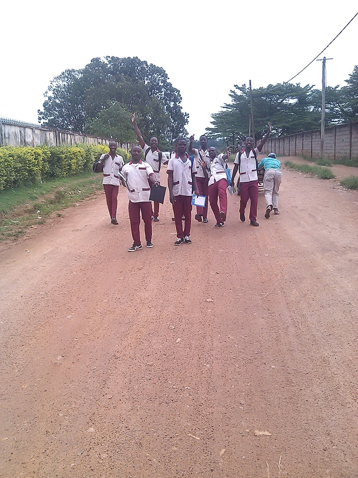
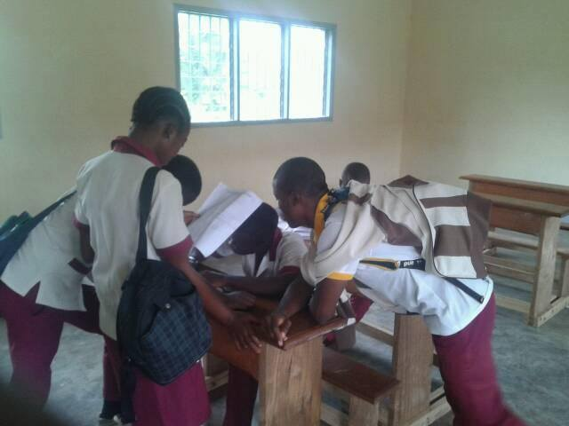
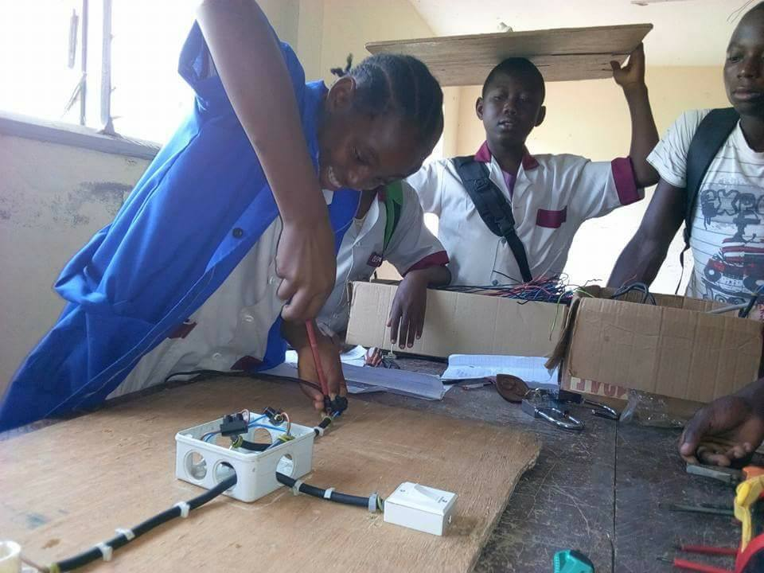
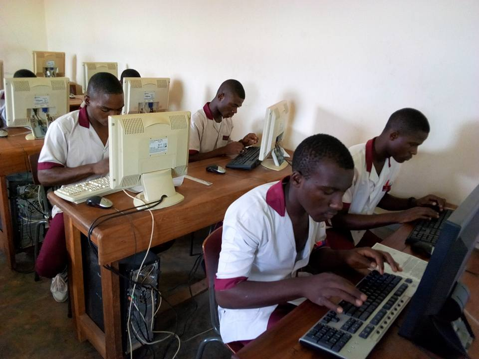
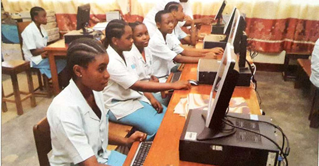
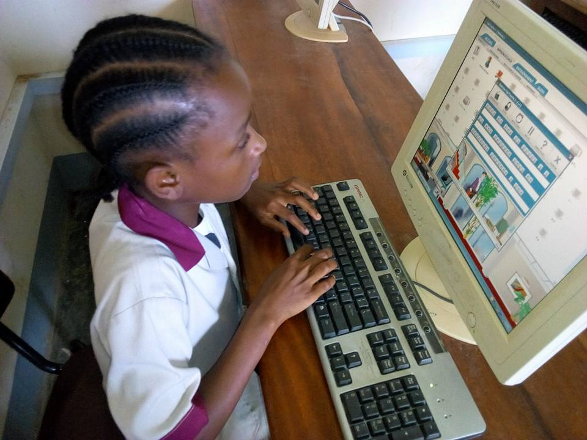

La jeunesse n’est pas une catégorie uniforme – entre l’adolescence et l’installation dans la société. Elle est riche d’une multitude de figures déjà légitimes pour entrer en dialogue et ne pas seulement subir les transitions qui lui sont imposées – de plus en plus longues. Pour les vivre comme des périodes d’expériences, personnelles et avec d’autres, des parcours de construction et de négociation. Car leur entrée dans la vie sociale se passe à un moment où les règles du jeu ne sont plus claires, où eux-mêmes ne sont pas en mesure de les faire évoluer. Les jeunes révèlent des changements dont ils sont les premiers affectés 1. Mais nos sociétés ne leur laissent pas facilement ouvertes les voies d’une recherche. Elles leur demandent d’abord de faire leurs preuves...
LA SALLE
COLLE SAINT MUTIENT MARIE
COMPTABILITE
Visiter
FISCALITE
En 2 minutes

SECRETARIAT BUREAUTIQUE
En 2 minutes
Le concept et la creativite
Notre politique

ENSEIGNEMENT GENERAL!
Envisagez le mieux

Admire
22-12-2018
2 commentaires
Mon avenir, je ne l’aurais pas cru… Il y a plein de choses à faire… Quand le bonheur se présentera, sois présent à l’appel

Admire
01-12-2019
1950 commentaires
Un Centre Informatique Cool/Vivant cle de l'emergence
Les élèves savent qu’ils vont en salle informatique pour « travailler » avec l’ordinateur, l’ordinateur étant un outil de travail différent, car il est synonyme de plaisir pour les élèves et représente une aide réelle pour l'enseignement.......

Admire
12-10-2011
56 commentaires
Vacances Vivantes
Depuis 2018, l’association des Volontaires Lassaliens a pour but d’assurer, dans le cadre de l’éducation permanente, la formation et les loisirs de la jeunesse ainsi que de contribuer au développement du sens des responsabilités et des aptitudes personnelles des jeunes. Au travers de moyens pédagogiques adaptés, elle se centre ainsi sur l’apprentissage d’un mieux-vivre ensemble et sur le développement d’une citoyenneté active chez les jeunes....
Admire
02-12-2019
2258 commentaires
Consommation : une jeunesse de bonne volonté
Si elle pointe du doigt les responsables politiques, la génération A (Adroide) ne se repose pas non plus sur ses lauriers. Dans leur quotidien, 83% des jeunes considèrent qu’ils font des efforts pour limiter leur impact sur l’environnement, dont 18% disent en faire beaucoup.

Admire
01-03-2020
2 commentaires
que fait l'Etat pour sa jeunesse ?
Les programmes artistiques et l’enseignement des arts ont un impact significatif sur le développement des enfants, en plus de susciter leur intérêt pour des domaines d’études et de travail liés aux « La mission extraordinaire de l'Etat est d'offrir a la jeunesse un appui considérable »..Pour encourager le développement créatif des jeunesse, offrir aux enfants et aux adolescents l’accès aux outils nécessaires à la pensée créative et à la capacité de créer sans limites, dans le but d’améliorer leurs engagements et leurs réalisations dans tous les domaines de leur vie....